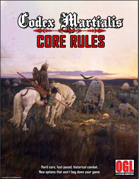
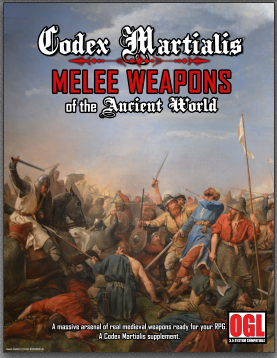
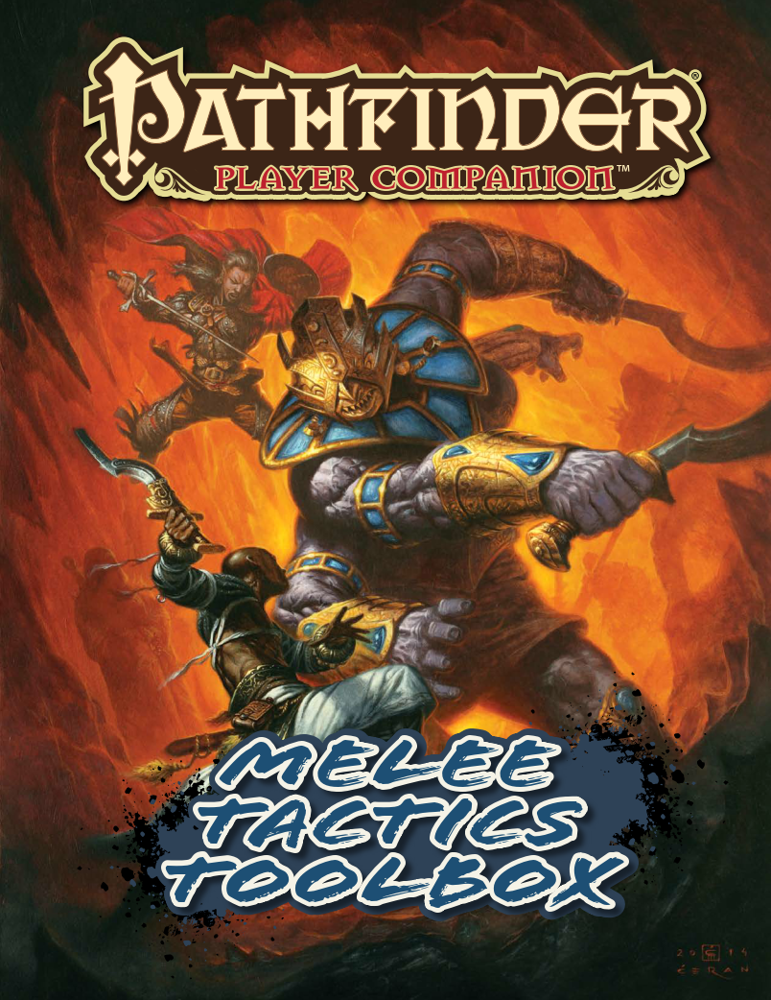
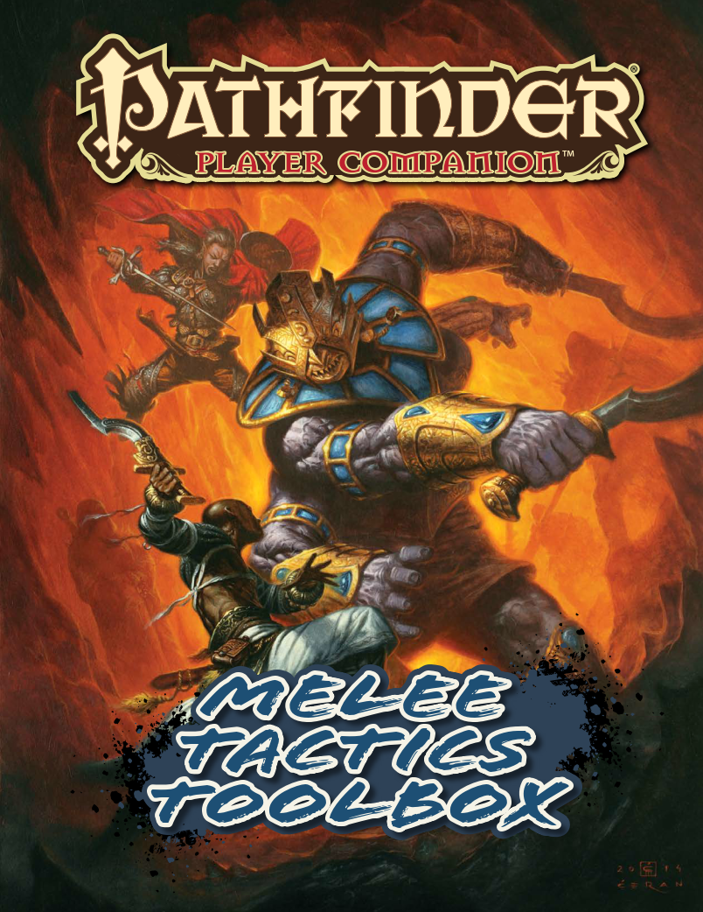

Working Notes
 
 



As for the spear only world, there are a lot of neolithic weapons which fill the niche of the sword – war hammers, hand axes, ‘proto swords’ edged with obsidian or shark’s teeth, daggers, throwing sticks, shortened spears, and various other weapons.
We cover a lot of these in our weapon book and some of them are in the core rules.
For a deeper dive into this stuff, I’d recommend Sir Richard Burton’s “Book of the Sword”. It’s a little bit fantastical but he gets into the pre-historical origins of swords, ‘proto-swords’ and many other related weapons.
One interesting theory he had, which I learned subsequently may have some legs, was that swords seem to have “evolved” from a range of ‘throwing sticks’ and ‘throwing woods’, some of which end up with a use and a shape similar to hunting boomerangs. There were two important types in Europe called ‘Cataea’ and ‘Teutona’. They were made smooth and streamlined to fly better, but this had the knock-on effect of making them cut through the air much better, which was exploited to make a new class of striking weapons and so on.
These go back to the neolithic in Europe, I think I remember they found one in a cave in Poland which was 30,000 years old.
Apparently there was a version of the Cataea known to the Greeks
http://www.perseus.tufts.edu/hopper/text?doc=Perseus:text:1999.04.0063:id=cateia-cn
https://www.jstor.org/stable/30079143?seq=1
In Codex Martialis, we have three range bands: Onset, Melee and Ringen (grapple).
The first range is Onset, which is everything up to the point where you can hit your opponent with a weapon by physically moving across the range threshold, which in game turns usually means taking a five-foot step. Opening attacks take place in this range, as does tactical movement just outside of actual combat. A weapon�s Reach To-Hit bonus is applicable during Onset range, making long weapons like spears and polearms ideal for fighting at this range. At Onset range, your weapons Defense bonus also counts.
The second range is Melee. Melee range is within Onset range. This is where you can hit the other person without taking a step. Melee range (called Krieg in German language fencing manuals) is very dangerous unless you are the one in control. Any time you make two or more attacks within a given turn, you will enter Melee range automatically. This is because in a fight, people tend to get closer.
If you don�t want to close to Melee range, you have to make a special effort like Maintaining Range, (which means spending some dice from your Martial Pool, or making only multi-dice attacks). While at Melee range, you use your Speed To-Hit bonus, meaning short weapons like daggers and hand axes are very effective here. At Melee range a weapons Defense bonus counts, just as it does at Onset.
The third range is Grapple. Grapple range is within Melee range. This is where you can execute grappling techniques like throwing another person, moving them or taking a weapon out of their hands. Entering Grapple range is not automatic, and Grapple range isn�t so much a particular distance as a particular state of combat. To initiate a Grapple, you have to either touch your opponent (Hit with an unarmed attack) or hit them with a small (Size T or S) weapon. Entering Grapple always grants the defender an Attack of Opportunity (AoO) unless you have a Feat (such as Ringen) or some special ability which says otherwise, and so long as they still have dice remaining in their Martial Pool. If they do have MP remaining they can use Martial Feats like Sidestep or Distance Fighting to avoid the grapple instead. If they have the Ringen MF they can have the choice whether to use their grappling skill to avoid Grapple or to win an exchange. If they don�t have any MP remaining, they cannot prevent you from initiating grapple.
Here the spearman drops his spear and performs a throw (Grapple attack) on the swordsman, who is now prone.
Entering grapple range has three immediate effects. Most weapons can no longer be used for defense (unless you have special Martial Feats), Shields only confer passive defense, and medium or larger weapons cannot be used to attack (unless you have special Martial Feats).
In The Grapple – What to do when you’ve been caught
So now we have some idea how to get into Grapple the next pressing issue is, what is it for? The answer is that of course, there are many things you can do in a grapple, some of which require certain Feats or skills, but others can be done by anybody. The basics including Immobilizing people, Throwing people, Disarming people, and Moving people.
Immobilizing your Opponent
Immobilizing is the easiest thing, as soon as you have initiated a grapple you have begun to prevent your opponent from doing many things. They can�t use their larger weapons, they can�t run away, they can�t start fires or blow horns, they can�t cast spells if you are using magic in your game. Temporarily immobilizing someone by grappling with them is not the same thing as pinning someone, but it can be a short term solution to many serious problems!
Throwing an Opponent
Throwing someone means taking them from a normal vertical standing position down to a horizontal prone position on the ground while you yourself remain standing. If you attempt to throw someone and you win a contested Grapple check (your Grapple To-Hit bonus vs. theirs) then they are Prone. If they have no MP remaining in their Pool, then it�s your Grapple die roll vs. their Passive Defense. In the SRD the Prone status confers a -4 penalty to defense in Melee (this applies to both Active and Passive Defense), and getting up from being prone triggers an AoO from anyone within normal attack range (5� for normal weapons, or 10� for reach weapons). If you fail to throw your opponent, you are considered to be still in a grapple at the beginning of the next turn, but they can�t do anything else until it�s their turn (unless they have a special MF like Counterstroke or Kampfringen). If you have the Kampfringen MF you can Throw your opponent with a successful defense of their attempt to throw you. See Kampfringen MF in the core rules for more details on this.
Grappling to a Take-Down
If you generate a bind or a counterattack (natural 20 on defense) during a Throw attempt, then both fighters end up prone and remain in grapple. This is called a take-down.
Disarming your Opponent
Disarming someone means taking their weapon out of their hands. This works the same way as a Throw. You make a contested Grapple Check and if you succeed, they no longer have a weapon. The defender in this case can decide whether or not to contest the attempt by spending an MP (they might instead prefer to move away for example). If they do, then the contested Grapple Check pits your die roll + Grapple Bonus vs. their die roll vs. Grapple bonus. The MF Gioco Stretto confers a Free Dice on any attempt to disarm.
Moving your Opponent
Moving someone might mean pushing someone off a cliff, or out of a door, or away from your friend, or away from the pool of naphtha they are trying to ignite with their torch, or away from a weapon they are trying to retrieve, or any other action which involves pushing someone away from where they are at the beginning of the round. Moving someone works the same way as a Throw or a Disarm. You make a contested grapple check, and if you succeed, you have moved them. Remember certain Feats confer Free Dice when grappling. For example, Ringen gives you one Free Dice for grappling in each turn. This can be for any roll related to the grapple, the initial touch, or an attempt to Throw, Disarm or Move, or in a defensive roll against such an attack. This stacks with all other Free Dice conferred by any other MF.
Grappling to Pin
If you have the MF Grapple and Pin, you can Pin your opponent with a successful grapple check and then either render them unconscious or cripple them. See Advanced Martial Feats, Grapple and Pin for more on this.
Using Weapons in Grapple
Unless you have special Martial Feats (such as Half-Swording or Half-Staff MF) you can only use weapons with a size T or S. Unarmed attacks such as those conferred by Dance de La Rue, Bind and Batter, Pugilism, or Morstrosse MF�s.
In the grapple, some weapons are better than others
The Grapple Bonus is normally your BaB plus your strength. If you have Weapon Finesse: Grappling, you can apply your dexterity bonus instead.
Grappling Is a Critical Component of Real Fencing
As fights run long, fighters typically get closer together. Real fighters don't just stand at melee-range and slam each other like boxing robots. Despite its prevalence, grappling has largely been avoided by RPG’s due to its complexity and to avoid burdening players with cumbersome new rules.
GRAPPLE range special:
No WDB
Shields do not grant advantage to Active Defense
=======================================================================================================================================
Prone:
limited to 1 MP for the round
attacker gets free MD to attack
expend 1 MD to stand, suffer AoO
crawl at 1/2 speed, suffer AoO
================================================================================================================
Grapple Range:
weapon defense bonus does not apply
cannot use weapons size >= M
shields only passive defense
weapons use "speed" bonus instead of "reach" bonus
Attack Types: Bludgeon (100% DR), Chop (150% DR), Pierce (100%) DR, Slash (200% DR)
Primary Attack: the only attack type(s) which can cause dynamic crits (all types cause normal crits)
Start of combat:
-------------
Initiative:
combatant with largest weapon size category (if they are unequal) rolls initiative w/ advantage
Per round:
-------------
To-Hit roll vs armor:
!d20 + BAB/Rank + Str + (WRB || WSB) + Thumbs up
damamge to armor: die roll - armor's hardness (which functions as DR in this case)